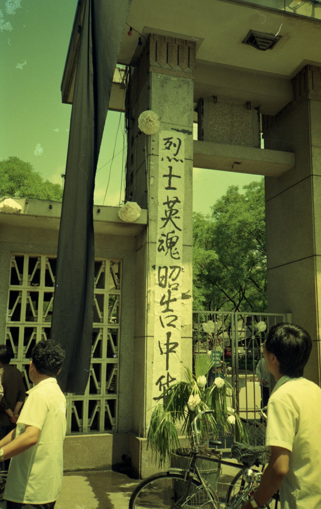

The left-hand banner at Peking University
北京大学南门左侧的悼念横幅

A close view of the banner on the left side of Peking University’s south gate shows a tribute to those killed.
北京大学南门左侧横幅的近景，横幅上的文字悼念遇难者。
Photo record
- Date
- June 7–11, 1989
The photographer’s description gives this range. The Commons date field lists June 7.
- Location
- Peking University south gate, Beijing
- Photographer
- Daiwenchen
- Source
- Wikimedia Commons record Full-size source file
- Reuse
- CC BY-SA 4.0
The archive uses resized copies of the Wikimedia Commons file.